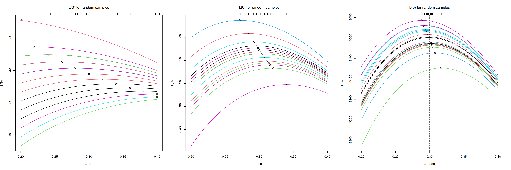

Large Sample Theory for the Maximum Likelihood Estimator
Corresponding reading
- Chapter 4.2.3-4.2.5, 4.9.1 in Agresti and Kateri (2021)
- Chapter 8.5.2 in Rice (2006) (Particularly for the proofs)
These lecture notes draw extensively from material from Shobhana Stoyanov’s lecture notes from Spring 2026, Lecture 14. You are welcome to look at her material directly as well.
Today we will discuss the distribution of the MLE when the sample size is large.
Recall, the MLE \(\hat{\theta}\) is the solution to an optimization problem, \[max_\theta L(\theta)=\max_\theta log f(X_1,\ldots,X_n|\theta)\] We do not even necessarily have a closed-form solution for \(\hat\theta\) – we can only write down the equation we want to optimize. Yet, amazingly we can say that \(\hat\theta\) is asymptotically normal (under some mild conditions on our density \(f\)) and the asymptotic mean and variance of that limiting normal distribution.
Questions/Goals for this Module
- Learn about the asymptotic normality of MLEs
- Understand the asymptotic standard error of MLEs and it’s connection to Fisher’s Information, \(I_n(\theta)\).
- Know how to create an asymptotic CI for MLEs.
Asymptotic Normality of MLE & Fisher Information
Note
Now that we are going to dive into asymptotics, we are going to start indexing our estimator \(\hat\theta\) with \(n\), writing \(\hat\theta_n\) so that we emphasize that our estimator depends on \(n\). This will make it clearer what is changing when we write \(n\rightarrow \infty\). We will also designate \(\theta_0\) as the true (unknown) \(\theta\) so that we can keep straight when we are talking about a function of \(\theta\) versus when we are plugging in the true value of \(\theta_0\).
The basic result is that \[ \hat{\theta}_n \approx N\!\left(\theta_0,\ \frac{1}{ I_n(\theta_0)}\right). \] The asymptotic standard error for \(\hat\theta_n\) is given by \(\dfrac{1}{\sqrt{I_n(\theta_0)}}\), where \(I_n(\theta)\) is a function we will discuss called the Fisher Information that we can derive by taking derivatives (and expectations) of \(f(X|\theta)\).
We will break this apart more carefully, but the key take-aways are
- MLEs are (under some assumptions) asymptotically normal
- We can write down an equation for its asymptotic standard error even if we don’t have a closed form expression for \(\hat\theta_n\). Note that this is the true asymptotic standard error, and relies on the unknown parameter \(\theta_0\)
- We can then estimate the standard error of \(\hat\theta_n\), for example by plugging in \(\hat\theta_n\) into our Fisher Information, \(I_n(\hat\theta_n)\)
- Thus, we can create asymptotic CI for \(\theta_n\), \[\hat\theta_n \pm z_{\alpha/2}\hat{SE}(\hat{\theta_n})\]
Note
In both the main textbook (Agresti and Kateri (2021)) and our supplemental book (Rice (2006)), the books only write down results for \(i.i.d\) samples, but in what follows I went ahead and wrote down the full generality, because it’s not more complicated, and in fact you do not need the assumption of \(i.i.d.\) data (or even independent data) for asymptotic normality of the MLE.
So let’s write down our result more carefully
Theorem 1 Under some assumptions (including smoothness conditions on the density function \(f\)), the maximum likelihood estimator, \(\hat{\theta}_n\) from \(X_1, \ldots, X_n\) with joint distribution \(f(x_1,\ldots,x_n|\theta)\), is asymptotically Normal:
\[ \frac{\left(\hat{\theta}_n - \theta_0\right)}{1/\sqrt{I_n(\theta_0)}}=\sqrt{I_n(\theta_0)}\left(\hat{\theta}_n - \theta_0\right) \xrightarrow{D} N(0,1) \] where \[I_n(\theta)=E_\theta\left(\frac{\partial}{\partial\theta}L(\theta)\right)^2=E_\theta\left(\frac{\partial}{\partial\theta}\log f(X|\theta)\right)^2.\] Under regularity conditions on \(f\)1, \[I_n(\theta)=-E_\theta\left(\frac{\partial^2}{\partial\theta^2}L(\theta) \right).\]
\(I_n(\theta)\) is called the Fisher information of the sample \(X_1,\ldots,X_n\).
We almost invariably be working with “well-behaved” distribution so that we can use the second equation. This is good, because it is much easier to take the second derivative of our density \(f\) than it is to take the expectation of something squared! In what follows, we will always use this second definition of \(I_n(\theta)\).
Fisher’s information
Let’s look at this quantity \(I_n(\theta)\) more carefully.
First of all, there are a lot of \(\theta\) values being used in the equation, \[I_n(\theta)=-E_\theta\left(\frac{\partial^2}{\partial\theta^2}L(\theta) \right).\] This introduces a slightly more cumbersome notation \(E_\theta\) for our expectation, which simply means, “the expectation assuming the true value of \(\theta\) is \(\theta\)”. This seems unnecessary, but it is to remind us that every value of \(\theta\) we insert into \(I_n(\theta)\), we have to put it both in the \[L''(\theta)\] and in the expectation. Think of it as a reminder that \(\theta\) will come out of both calculations.
What does this look like? How do we calculate \(I(4)\)? We could more explicitly write it as: \[I(4)=-E_{\theta=4}\left(\frac{\partial^2}{\partial\theta^2}\log f(X|\theta)\Bigg|_{\theta=4} \right)\] So in particular,
Take second derivative of \(\log f(X|\theta)\) with respect to the variable \(\theta\) \(\Rightarrow\) function of \((\theta,X)\)
Plug in the actual value of \(\theta=4\) \(\Rightarrow\) function of \(X\).
This is because \[\frac{\partial^2}{\partial\theta^2}f(X|\theta)\Bigg|_{\theta=4}\] is is now a function of just the \(X_i\) – we’ve plugged in the value of \(\theta=4\) so there is no \(\theta\) left.
Take the expectation of that quantity with respect to the random \(X\) \(\Rightarrow\) function of \(\theta\)
This is because the expectation of the quantity in #2 will depend on the actual \(\theta\) you are taking the expectation under so that \[E_\theta\left(\frac{\partial^2}{\partial\theta^2}log f(X|\theta)\Bigg|_{\theta=4} \right)\] is now a function of \(\theta\) again, which the notation \(E_\theta\) helps us remember.
Plug in \(\theta=4\) \(\Rightarrow\) a real number.
To get \(I(\theta)\) for a particular \(\theta=4\), we will be evaluating that function at \(\theta=4\), so we will plug that in to get \(I(4)\).
i.i.d. Data
We will frequently be working with the assumption that \(X_i\) are i.i.d. In this case we have an important simplification, \[\begin{aligned} I_n(\theta)&=-E_\theta\left(\frac{\partial^2}{\partial\theta^2}\sum_{i=1}^n log f(X_i|\theta) \right)\\&=-\sum_{i=1}^nE_\theta\left(\frac{\partial^2}{\partial\theta^2}f(X|\theta)\right)\\&=- n E_\theta\left(\frac{\partial^2}{\partial\theta^2}f(X|\theta)\right)\end{aligned}\] In the books, which only handle the i.i.d. case, this is the definition of \(I_n(\theta)\) that is given because they are assuming i.i.d. data.
Notice that this means that the asymptotic standard error of \(\hat\theta_n\) is \[\frac{1}{\sqrt{I_n(\theta_0) }}=\frac{1}{\sqrt{nI(\theta_0)}}\] so we see that our standard error is getting small for larger \(n\). Even if we don’t have i.i.d. data, in general \(I_n(\theta)\) will be an expression that gets smaller with larger \(n\) – it may just not be able to be written as a quantity times \(n\).
Note
There are some notation discrepancies here between the main textbook (Agresti and Kateri (2021)) and our supplemental book (Rice (2006)).
In Agresti and Kateri (2021), they write \(I(\theta)\) for the Fisher information of the whole sample, what I am calling \(I_n(\theta)\) above. In Rice (2006), they write \(I(\theta)\) for the Fisher information of a single observation, i.e. \[I(\theta)=-E_\theta\left(\frac{\partial^2}{\partial\theta^2}f(X|\theta)\right).\] This discrepancy can show up in statistics, so it is something to always watch for – a difference of a factor of \(n\) is pretty substantial if you are creating confidence intervals, for example!
I am choosing to write \(I_n(\theta)\) for the whole sample, where the \(n\) emphasizes its the information for the all \(n\) samples, and I am letting \(I(\theta)\) be for an individual sample. This way I can distinguish between them and we can see more explicitly the role of \(n\) versus \(I(\theta)\) in our equations.
Example – Bernoulli\((\pi)\)
Suppose we have binary data and model them as \(X_1, X_2, \ldots, X_n \overset{\text{i.i.d.}}{\sim} \text{Bern}(\pi)\)
Recall our likelihood and log-likelihood functions. \[ \begin{aligned} \ell(\pi) &= \pi^{\sum x_i}(1-\pi)^{n-\sum x_i} = \pi^{n\bar{x}}(1-\pi)^{n-n\bar{x}} \quad \text{(recall } \textstyle\sum x_i = n\bar{x}\text{)}\\ L(\pi) &= \log\ell(\pi) = n\bar{x}\log \pi + (n - n\bar{x})\log(1-\pi) \end{aligned} \] We’ve already found \(L'(\pi)\) in finding the MLE: \[ L'(\pi) = \frac{n\bar{x}}{\pi} + \frac{n - n\bar{x}}{1-\pi} \cdot(-1) = \frac{n\bar{x}}{\pi} - \frac{n-n\bar{x}}{1-\pi} \] Setting \(L'(\pi)=0\) and solving gave us the maximum likelihood estimator, \(\hat{\pi} = \bar{X}\).
To find the Fisher’s Information, we need to calculate \(I_n(\pi_0)=E(-L''(\pi_0))\). Let’s go through the steps from above, but we will make them more concise.
Take second derivative of \(\log f(X|\theta)\) with respect to the variable \(\theta\)
This gives us \[ L''(\pi) = -\frac{n\bar{x}}{\pi^2} - \frac{n - n\bar{x}}{(1-\pi)^2} < 0 \] which is a function of \(X_i\) and \(\pi\).
Notice that the second derivative of \(L(\theta)\) is negative, confirming that \(\hat{\pi}\) is indeed a maximum.
Take the expectation of that the negative of that quantity with respect to the random \(X\) (recall that \(E(\overline{X}) = \pi\)): \[\begin{align*} -E(L''(\pi)) &= \frac{n\,E(\overline{X})}{\pi^2} + \frac{n\,E(1-\overline{X})}{(1-\pi)^2}\\ &= \frac{n\pi}{\pi^2} + \frac{n(1-\pi)}{(1-\pi)^2} \\ &= \frac{n}{\pi(1-\pi)} \end{align*}\] Now we have something that is only a function of \(\pi\). This is critical – there should be nothing random left!
Plug in \(\theta=\theta_0\) \[ \implies I_n(\pi_0) = \frac{n}{\pi_0(1-\pi_0)} \quad \text{and} \quad I(\pi_0) = \frac{1}{\pi_0(1-\pi_0)}, \] since \(I_n(\pi_0) = nI(\pi_0)\).
By the asymptotic Normality of the MLE,
\[\begin{align*} \sqrt{nI(\pi_0)}\,(\hat{\pi}_n - \pi_0) &\overset{D}\longrightarrow \mathcal{N}(0,1)\\ \implies \frac{\sqrt{n}}{\sqrt{\pi_0(1-\pi_0)}}(\hat{\pi}_n - \pi_0) &\overset{D}\longrightarrow \mathcal{N}(0,1)\\ \end{align*}\]
\[ \implies \hat{\pi}_n \approx N\!\left(\pi_0,\; \frac{\pi_0(1-\pi_0)}{n}\right) \]
Of course we also have this result from the CLT, since \(\hat\pi\) is just the mean. Let’s look at a less obvious example that isn’t just the mean.
Example – Exponential\((\lambda)\)
Suppose we model our data as \(X_1, \ldots, X_n \overset{\text{i.i.d.}}{\sim} \text{Exp}(\lambda)\) with pdf of \(X_i\) given by, \[ f(x|\lambda) = \lambda e^{-\lambda x} \] Because the data is i.i.d, we can calculate \(I(\theta_0)\) from a single observation, rather than the full likelihood. Meaning, we can just work with a single \(X \sim f(x|\lambda)\): \[ \ell(\lambda|x) = \lambda e^{-\lambda x} \implies L(\lambda) = \log\lambda - \lambda x \] We take the derivative and set it equal to zero to get the MLE, \[ L'(\lambda) = \frac{1}{\lambda} - x=0 \implies \hat{\lambda} = \frac{1}{x} \] Now we keep going to get the asymptotic variance of \(\hat\lambda\): \[ L''(\lambda) = -\frac{1}{\lambda^2} <0 \implies I(\lambda) = E(-L''(\lambda)) = \frac{1}{\lambda^2} \]
Thus the Fisher information is given by \(I(\lambda_0) = \frac{1}{\lambda_0^2}\), where \(\lambda_0\) is the true value of the parameter.
Note
Notice that \(L''(\lambda)\) actually wasn’t a function of \(X\) anymore – it was just a negative constant. That can frequently happen, and it just makes taking the expectation very easy since the expectation of a constant is the constant.
Therefore \(I_n(\lambda_0)=nI(\lambda_0)\) and we have,
\[ \sqrt{nI(\lambda_0)}\,(\hat{\lambda}_n - \lambda_0) = \sqrt{n}\cdot\frac{1}{\lambda_0}(\hat{\lambda}_n - \lambda_0) \overset{D}\longrightarrow \mathcal{N}(0,1) \]
\[ \implies \hat{\lambda}_n \approx N\!\left(\lambda_0,\; \frac{\lambda_0^2}{n}\right) \]
Intuition behind the Fisher Information
The second derivative of \(L(\theta)\) tells us about rate of change of the gradient. If \(L\) is very steep then as we move away from the maximum, the gradient changes very rapidly; \(I(\theta_0)\) is a measurement of whether this is true on average near the true value \(\theta_0\) (\(E[-L''(\theta_0)]\)) is large). If so, then on average \(L(\theta)\) has a large, easy to find peak near \(\theta_0\), and the asymptotic variance, given by \(\dfrac{1}{I(\theta_0)}\) will be small.
If the curve is shallow this means that gradient not changing very much as you move away from \(\theta_0\), so hard to discern where the maximum is.
Consider the log-likelihood function \(L(\pi)\) of Bernoulli data for different sample sizes, where the true value is \(\pi_0=0.30\):
\(L(\pi)\) are random functions, i.e. different realizations for each sample. \(I_n(\pi_0)\) is the average of \(-L''(\theta_0)\) over repeated samples.
Notice that as \(n\) is increasing, how the curvature of \(L(\pi)\) is getting larger and larger at its max, and since the max is near the true \(\pi_0\), also at the true \(\pi_0\).
We can see that if the likelihood function are something like random perturbations of the likelihood on the left, then we will tend to get smaller curvature at \(\pi_0\) (\(-L''(\pi_0)\)), and estimates \(\hat\pi\) that are spread out – i.e. high variance of \(\hat\pi\). If instead likelihood function like on the right, we have much higher curvature at \(\pi_0\) and our maximums are closely concentrated near \(\pi_0\) – i.e. low variance.
Role of distributional assumptions
What happens if we are wrong about the distribution of our data? The short answer is that the MLE is still generally going to be normally distributed, but the parameters of the distribution are not going to be what this theory suggests. We can’t say what those parameters are going to be without any information about the true distribution. But often, if the true data distribution is close in some sense to our assumptions, the problem will be largely in the variance, which will no longer be \(I_n(\theta_0)^{-1}\). There are sandwich estimators of variance that are more robust to the assumptions and can estimate the true variance, but at a cost of generally being more conservative than \(I_n(\theta_0)^{-1}\) if the assumptions are true (i.e. overestimating the variance of \(\hat{\theta}\) when the distribution actually does have density \(f(x|\theta)\)).
Confidence Intervals
We can use the asymptotic normal distribution to construct confidence intervals just like before.
Recall the basic form of our Wald CI for asymptotically normal esitmators, \[\hat\theta_n \pm z_{\alpha/2} \hat{SE}_{\hat\theta_n}.\] Thus, we need to determine ah estimator of \(SE_{\hat\theta_n}\), the asymptotic standard error. From above, we know that asymptotically, \[SE_{\hat\theta_n}=I_n(\theta_0)^{-1/2}.\] A natural estimator is to plug in \(\hat\theta_n\) for \(\theta_0\)2, \[\hat{SE}_{\hat\theta_n}=I_n(\hat\theta_n)^{-1/2},\]
Using this, we construct a \((1-\alpha)100\%\) confidence interval for \(\theta_0\) using the asymptotic normality of \(\hat\theta_n\),
\[\hat\theta_n \pm z_{\alpha/2} I_n(\hat\theta_n)^{-1/2},\] Notice that for i.i.d. data, the estimate of variance of \(\hat\theta_n\) is \[I_n(\hat\theta_n)^{-1}=\frac{I(\hat\theta_n)^{-1}}{n}\] so that \(I(\hat\theta_n)^{-1}\) is taking the role that \(S^2\) performed in confidence intervals for the mean.
Proof of Results
Proof of equivalence of \(I_n(\theta)\)
Before we get to the proof of the asymptotic normality we’re going to focus on the equality that I said we could take for granted for our problems. Namely, for “nicely behaved” density or pmf functions, \[I_n(\theta):=E_\theta\left(\frac{\partial}{\partial\theta}\log f(X|\theta)\right)^2= - E_\theta\left(\frac{\partial^2}{\partial\theta^2}L(\theta) \right).\] We will define another useful quantity called the score function to help derive this identity.
You have seen that to solve for our MLE, we take the gradient with respect to \(\theta\), \(L'(\theta)\). The function \(L'(\theta) = \frac{\partial}{\partial\theta} \log f(x|\theta)\) is called the score function for a single observation. The score function for a random sample \(X_1, \ldots, X_n\) is the derivative of the full log likelihood function given the sample, which if we assume the data is \(i.i.d.\) gives us \[ \frac{\partial L(\theta)}{\partial\theta} = \frac{\partial}{\partial\theta} \left(\sum_{i=1}^n \log f(x_i\mid \theta)\right) = \sum_{i=1}^n \frac{\partial}{\partial\theta}\log f(x_i\mid \theta), \] i.e. the sum of the score function on each observation. This is what we use to find the MLE.
Lemma 1 Under smoothness conditions on \(f(x|\theta)\), the expectation of the score function is 0.
Proof. Consider \(f(x|\theta)\), a density function, which means that it integrates to 1:\(\int f(x|\theta)\, dx = 1\). \[ \Rightarrow \frac{\partial}{\partial\theta} \int f(x|\theta)\, dx =\frac{\partial}{\partial\theta}(1) = 0 \] Interchanging the order of differentiation and integration (this is what requires conditions on \(f(x|\theta)\) to allow this), we get: \[ \int \frac{\partial}{\partial\theta} f(x|\theta)\, dx = 0 \] Multiply and divide by \(f(x|\theta)\) to get: \[ \int \frac{\frac{\partial}{\partial\theta} f(x|\theta)}{f(x|\theta)} \cdot f(x|\theta)\, dx = 0. \] But \(\displaystyle \frac{\frac{\partial}{\partial\theta} f(x|\theta)}{f(x|\theta)} = \frac{\partial}{\partial\theta} \log f(x|\theta)\), which means that \[ \int \left(\frac{\partial}{\partial\theta} \log f(x|\theta)\right) \cdot f(x|\theta)\, dx = E_\theta \left[\frac{\partial}{\partial\theta} \log f(X|\theta)\right] = 0. \] This completes the proof.\(\blacksquare\)
Thus we have shown that the expectation of the score function is 0. Note that this implies that \(I(\theta)\) is the variance of the score function.
Lemma 2 Under appropriate smoothness conditions on \(f(x|\theta)\), \[I(\theta) = \displaystyle E_\theta \left[\left(\frac{\partial}{\partial\theta} \log f(X|\theta)\right)^2\right] = - E_\theta \left[\dfrac{\partial^2\log f(x\mid \theta)}{\partial \theta^2}\right].\]
Since \(\displaystyle E_\theta\left[\frac{\partial}{\partial\theta}\log f(X|\theta)\right] = 0\), that is: \[ \int \frac{\partial}{\partial\theta} \log f(x|\theta) \cdot f(x|\theta)\, dx = 0 \]
We can differentiate with respect to \(\theta\) again, and then, moving the derivative inside the integral, we get: \[ \frac{\partial}{\partial\theta}\left[\int \frac{\partial}{\partial\theta} \log f(x|\theta) \cdot f(x|\theta)\, dx\right] = 0 \]
\[ \Rightarrow \int \frac{\partial^2}{\partial\theta^2} \log f(x|\theta) \cdot f(x|\theta)\, dx + \int \frac{\partial}{\partial\theta} \log f(x|\theta) \cdot \frac{\partial}{\partial\theta} f(x|\theta)\, dx = 0 \] Now we are going to do a trick which we will use many times - we multiply and divide by \(f(x|\theta)\) and note that \(\displaystyle \frac{\frac{\partial}{\partial\theta} f(x|\theta)}{f(x|\theta)} = \frac{\partial}{\partial\theta} \log f(x|\theta)\).
Therefore, we get that: \[ \int \frac{\partial^2}{\partial\theta^2} \log f(x|\theta) \cdot f(x|\theta)\, dx + \int \left[\frac{\partial}{\partial\theta} \log f(x|\theta)\right]^2 f(x|\theta)\, dx=0 \]
Both these terms are expectations w.r.t to the density \(f(x\mid \theta)\), which means that: \[ E_\theta\!\left[\frac{\partial^2}{\partial\theta^2} \log f(X|\theta)\right] + E_\theta\!\left[\left(\frac{\partial}{\partial\theta} \log f(X|\theta)\right)^2\right] = 0 \] Which gives us: \[ E_\theta\!\left[\left(\frac{\partial}{\partial\theta}\log f(X|\theta)\right)^2\right] = I(\theta) = -E_\theta\!\left[\frac{\partial^2}{\partial\theta^2}\log f(X|\theta)\right] \] \(\blacksquare\)
Proof of Asymptotic Normality of the MLE
Theorem 2 Let \(X_1, X_2, \ldots, X_n \sim f(x|\theta)\) be an i.i.d. random sample, and let \(I_n(\theta_0) = nI(\theta_0)\) be the Fisher information of the sample.
Then, under appropriate smoothness conditions on \(f\), we have that \(\hat{\theta}_n\), the maximum likelihood estimator for \(\theta_0\), has an asymptotically normal distribution. That is, the distribution of the standardized MLE converges to the standard normal distribution:
\[ \sqrt{nI(\theta_0)}\,\bigl(\hat{\theta}_n - \theta_0\bigr) \xrightarrow{D} N(0,1) \]
This implies that for large \(n\):
\[ \hat{\theta}_n \approx N\!\left(\theta_0,\; \frac{1}{nI(\theta_0)}\right) \]
Proof. \(\hat{\theta}_n\) maximizes the log-likelihood function:
\[ L(\theta) = \sum_{i=1}^{n} \log f(X_i|\theta) \implies L'(\hat{\theta}_n) = 0 \]
We can do a Taylor’s series expansion of \(L'(\hat{\theta}_n)\) in a neighborhood of \(\theta_0\):
\[ 0 = L'(\hat{\theta}_n) \approx L'(\theta_0) + L''(\theta_0)\cdot(\hat{\theta}_n - \theta_0) \]
\[ \implies L'(\theta_0) + L''(\theta_0)(\hat{\theta}_n - \theta_0) \approx 0 \]
\[ \implies \hat{\theta}_n - \theta_0 \approx -\frac{L'(\theta_0)}{L''(\theta_0)} \]
\[ \implies \sqrt{n}\,(\hat{\theta}_n - \theta_0) \approx -\frac{L'(\theta_0)/\sqrt{n}}{L''(\theta_0)/n} \tag{1}\]
We will consider the numerator and denominator separately.
Numerator: \(L'(\theta_0)/\sqrt{n}\)
\[ E\!\left(\frac{L'(\theta_0)}{\sqrt{n}}\right) = \frac{1}{\sqrt{n}}\,E\bigl(L'(\theta_0)\bigr) = 0 \]
\[ \implies \operatorname{Var}\!\left(\frac{L'(\theta_0)}{\sqrt{n}}\right) = \frac{1}{n}\operatorname{Var}\bigl(L'(\theta_0)\bigr) \]
\[ = \frac{1}{n}\,E\!\left[(L'(\theta_0))^2\right] = \frac{1}{n}\cdot \underbrace{I_n(\theta_0)}_{\text{FI of sample}} \]
\[ = \frac{1}{n}\cdot nI(\theta_0) = I(\theta_0) \]
Consequently, since \(L'(\theta) = \sum_{i=1}^{n} \dfrac{\partial\log f(X_i|\theta)}{\partial\theta}\), which is a sum of i.i.d. random variables, we can apply the CLT to this sum, and we get that \[ \dfrac{L'(\theta_0)/\sqrt{n}}{\sqrt{I(\theta_0)}} = \dfrac{L'(\theta_0)-0}{\sqrt{nI(\theta_0)}} \overset{D}{\longrightarrow} \mathcal{N}(0,1) \tag{2}\]
Denominator: \(L''(\theta_0)/n\)
\[ \frac{1}{n}\,L''(\theta_0) = \frac{1}{n}\sum_{i=1}^{n} \frac{\partial^2}{\partial\theta^2}\log f(X_i|\theta_0) \]
This is the sample mean of the i.i.d. random variables \(\dfrac{\partial^2}{\partial\theta^2}\log f(X_i|\theta_0)\), and therefore by the WLLN this converges to:
\[\begin{align*} E\!\left(\frac{\partial^2}{\partial\theta^2}\log f(X|\theta_0)\right) &= -I(\theta_0)\\ \implies \frac{1}{n}\,L''(\theta_0) &\xrightarrow{P} -I(\theta_0) \end{align*}\] Since convergence in probability implies convergence in distribution, we see that \[ \frac{1}{n}\,L''(\theta_0) \xrightarrow{D} -I(\theta_0) \tag{3}\]
By Slutsky’s theorem, we can replace the denominator in Equation 1 by the constant that it converges to.
Putting it all together
Combining the results from Equation 2 and Equation 3, and plugging these into Equation 1, we see that for large \(n\) we have:
\[\begin{align*} \sqrt{n}\,(\hat{\theta}_n - \theta_0) &\approx -\frac{L'(\theta_0)/\sqrt{n}}{L''(\theta_0)/n} \\ &\approx \frac{L'(\theta_0)/\sqrt{n}}{I(\theta_0)}\\ \Rightarrow \sqrt{nI(\theta_0)}\,(\hat{\theta}_n - \theta_0) &\approx \frac{L'(\theta_0)}{\sqrt{nI(\theta_0)}} \overset{D}\longrightarrow \mathcal{N}(0,1) \\ \end{align*}\] \(\blacksquare\)
M-Estimators more Generally
Recall that when we looked at using loss functions in regression, we said that we can view both MLE estimation and estimation using loss functions as a special case of M-Estimators. Namely, we find our estimator of \(\theta\) by minimizing the average of \(\rho(y_i,\theta)\), \[\min_\theta \frac{1}{n}\sum_{i=1}^n \rho(Y_i,\theta).\] MLE estimators are the special case when \[\rho(y_i,\theta)= -\log f(y_i|\theta)\] Much of the theory above for MLE estimators can be extended to M-estimators, but now with requirements about the smoothness (along with other conditions) on \(\rho\) rather than the density \(f(y_i|\theta)\).
Getting into this theory is beyond the scope of this class. But ultimately, the resulting \(\hat\theta_n\) are asymptotically normal, and so we can similarly construct Wald CI for \(\theta\).
References
Agresti, Alan, and Maria Kateri. 2021. Foundations of Statistics for Data Scientists. Chapman; Hall/CRC.
Rice, John A. 2006. Mathematical Statistics and Data Analysis. 3rd ed. Duxbury Press.
Footnotes
e.g. \(f\) being twice differentiable and being able to switching the order of integration and differentiation↩︎
Though there are several other strategies as well, some of which do not require computing the expectation required for \(I_n(\theta)\) at all. They are often used more in practice because they can be pulled directly from output of the optimization of \(L(\theta)\)↩︎